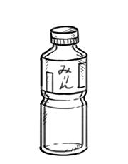

mirin
Mirin, or 味醂 or みりん, is a condiment in Japanese cuisine. It's a type of rice wine but with a lower alcohol and higher sugar content than sake. The sugars form naturally during the fermentation process, and are not added. There are 3 types: Hon mirin (true mirin), which contains about 14% alcohol, second is Shio mirin which has less alcohol (lower than 1.5%) and third is Shin mirin, which has less than 1% alcohol while retaining the same flavor. It has a strong flavor.
A small amount of mirin can be used instead of sugar and soy sauce.